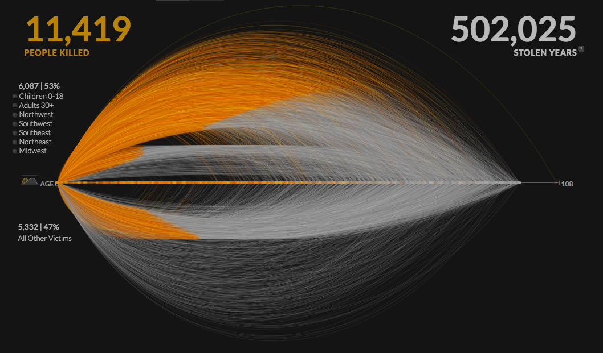
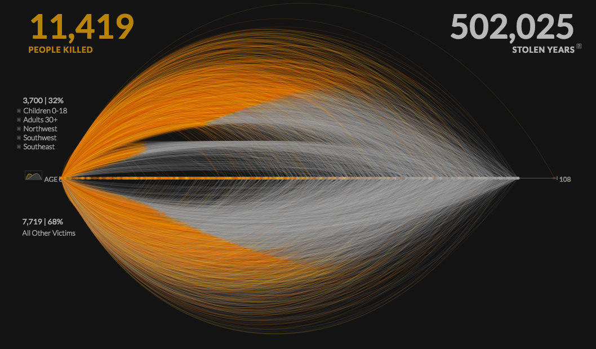
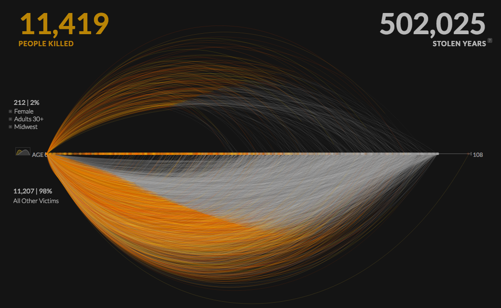
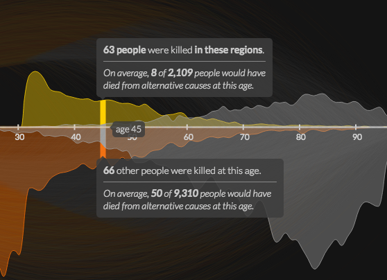
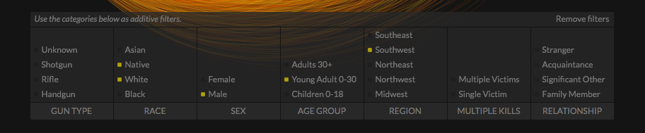
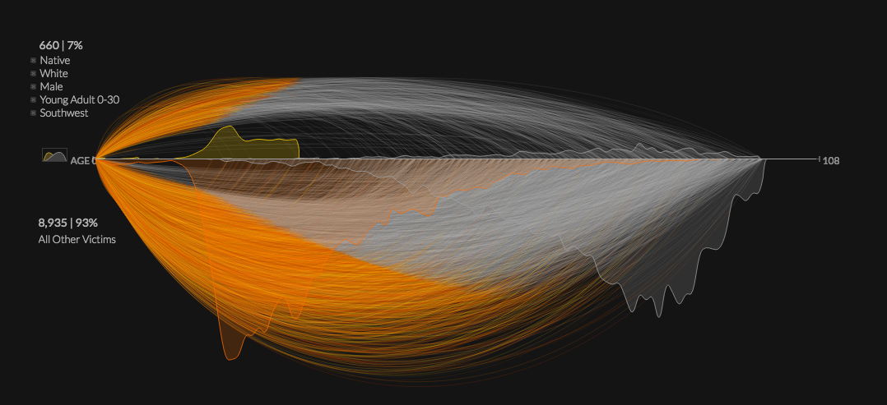
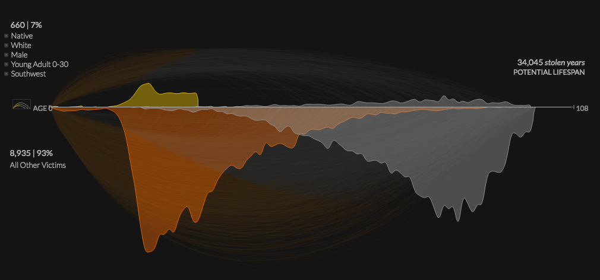
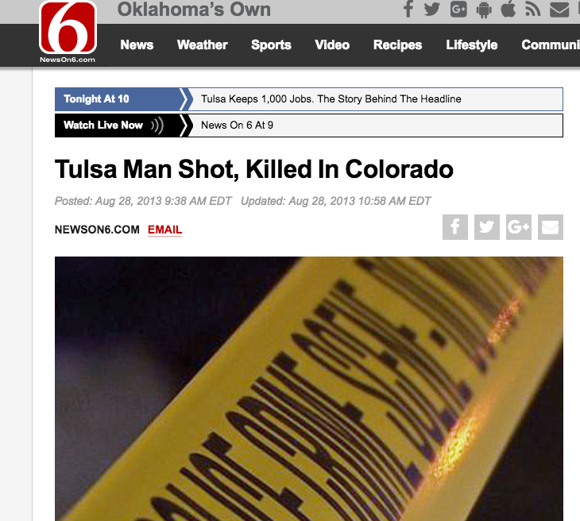
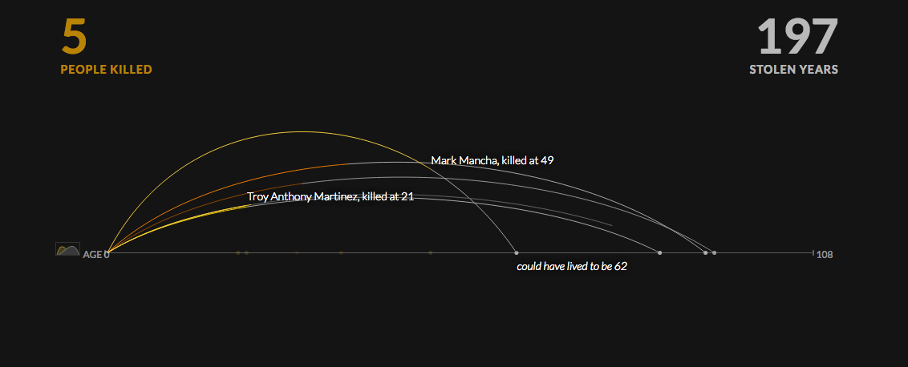

This project is trying to achieve an accurate depiction of the lives lost due to gun violence throughout the U.S, and the amount of years that each victim, and society, lost due to gun violence.The origin of the data for 2010 is the FBI’s Uniform Crime Report, which utilizes data from police precincts from throughout the U.S that was voluntarily reported. This information includes the demographics (age, gender, race, relationship to killer, etc.) of the victims. The 2013 data was collected by the federal government, and also included Twitter data surrounding gun deaths.

There is no overt point of view stated in the vizualization, but several elements of the website's design and content encourage the position that gun deaths are problematic and perhaps avoidable:
No.
When using the filter system, the curves for the selected demographic move above the axis and all other victims move below. The quantity of curves does not appear to be accurately correlated, visually, to the percentages of victims on display.
 Shows floating text boxes for explanation when hovering over the graphs:

Provides multiple combinations of filters:

Presents the data in two forms (interactive visualization & curve chart):
 Clicking the curve can lead to the link of the news reporting the death (though some links are expired):
No legend to explain the gradient yellow color of the curves (we suspect it's to make the overlapping curves legible, but it's not actually explained):
